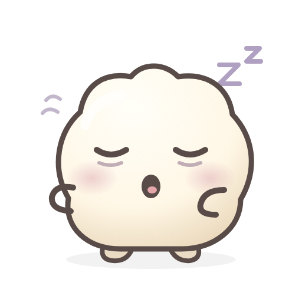
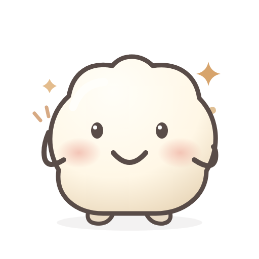
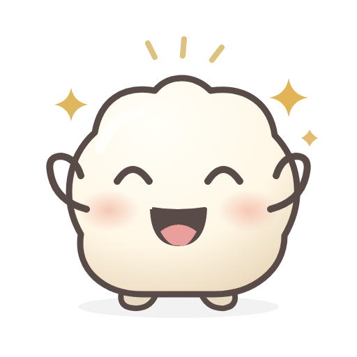

身体的节奏
看见变化，
多懂自己一点。
连接 Apple 健康，查看心率、血氧、HRV 与心电图。用日、周、月趋势，认识自己的日常。
HRV · 一周趋势示例
48 ms每个人，都有自己的节奏
仅供日常参考，不用于疾病诊断。
不必时刻满分，舒服就很好。
48 ms
慢慢积累，了解自己的节奏。
68 次/分
98 %



界面概念展示 · 健康数值为示例
从记录开始，多了解自己
看看健康趋势，记记每天的心情。
按自己的节奏，慢慢养成关心自己的习惯。
身体的节奏
连接 Apple 健康，查看心率、血氧、HRV 与心电图。用日、周、月趋势，认识自己的日常。
仅供日常参考，不用于疾病诊断。
心情的天气
开心也好，疲惫也好。选一个小团子，记下心情、压力和想说的话，给此刻的自己一点回应。
把时间，还给自己
从耳边的自然，到手腕上的陪伴。
一点点安静，随时都在。

属于你的安静时刻
仿佛走进一片森林，给呼吸留一点空间。
抬腕查看健康摘要，快速记下心情。Apple Watch 可独立播放声音，也可控制 iPhone。
根据本地健康记录，提供可关闭的放松与健康提醒。通知遵循系统设置，把节奏交还给你。
晴空、林间、海岸、星夜，四种场景随心切换。喜欢的风景，也能保存为壁纸。
好的陪伴，也懂得分寸
不需要账号，没有广告。
健康数据与日记不上传至自有服务器，
心情与偏好仅在你的配对设备间同步。